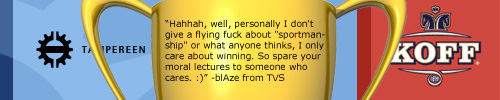

Short pre-match interview with blAze

Bps caught up with one of today’s NQR Gold finalists, blAze for a short interview. The questions are obviously about the tonight’s final match, KOFF, NQR and EQL. Without further ado read this and hopefully you will get yourself even more bumped up for the game of the season.
Hello blAze! How do you feel today?
Hello. All good, just waiting to play the final at last. :)
Nice, yes tonight is a special night - it’s the Gold Cup Final versus the KOFF! How does this make you feel? Sitting at work, playing through dm3 in your head? Are you nervous, anxious?
Was too busy with work to give it a much thought yet. I’m quite comfortable about the game, I guess we could have pracced a little bit more, but even the stats are on our side. I’m not sure if we have ever lost an official game to KOFF.
Self confident I hear. Your last official encounter with KOFF resulted 2-1 in your favour, losing The castle of Eh (e1m2). Is this tVS’ weakest map? And have you had any thoughts about how you will play it tonight?
Yes it is our weakest map because most of us don’t like to play it, thus we end up playing it only in officials. On the other hand I think we have been able to imporove our game in it and especially Diki has played well in e1m2 so I’m still hoping we could win in e1m2 as well. I guess this is the map where teamplay is most essential of tb3, because alone you’re dead quickly. Of course solid teamplay is KOFF’s forte, so they will be difficult to beat here. We dont have any special plan for e1m2, just need to play good basic play.
Ok. Now… how do you prepare for an important game like this? Having a bud at Ventrilo an hour before? Or intense pov-warmup?
Well back in the day we would have tried to prac all day, but nowadays I try to keep the warmup short because I’ve noticed that the first few rounds tend to be my best. Especially now that we could have a long BO5 game. So yeah, a few povs or a map of 4on4 before the game and I’m set. I’ll save the bud for after. :P
… or maybe a Koff (beer)?
Well probably get enough of Koff in the game, as they are an opponent that is always difficult to play against. :P
So, looking in the rearview mirror on NQR11 - how do you think the clans have managed? Are you impressed or disappointed on any clans performance during this season?
Well, I think SD surprised most with their good results. In fact many times they were very close to create even bigger upsets, but by their own mistakes failed in the end. If they can get rid of the many silly mistakes, they should do well in the future. On the other hand many former top clans like SR and f0m were a disappointment, probably due to inactivity and playing with weaker lineups instead of their “A-team”
Ok. Regardless of the outcome of tonights game we will be seeing you in the EQL7 Summer Cup, stomping around on cmt3 and cmt4. However, will we see you in the coming “regular season” after the summer?
Well I wouldn’t go as far as “regardless of the outcome”. Last time, the wrong outcome resulted in a 2 year break from QW. :D What happens after the summer is pretty much anyones guess. All I can say is that right now I’m enjoying playing and I’m not planning to stop for summer or anything.
Nice to hear! Thanks for your time, and good luck tonight!!!
No problem and thanks. :)
gotta love this big-day interviews!